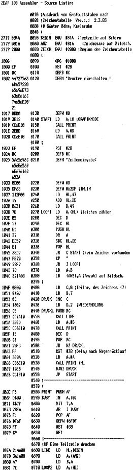
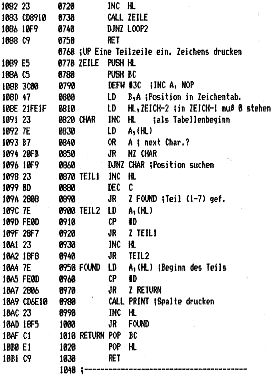

80-Bus Journal |
März 1983 · Ausgabe 3 |



Hallo liebe Leser,
es ist Ihnen doch sicherlich aufgefallen, daß unser Drucker bei der letzten Ausgabe geschlafen hat. So wurde aus der Februarnummer nochmals ein Januarheft. Auch ein 418K-Eprommer wurde kreiert, was vor allem den Autor sehr entsetzte. In Zukunft wird das (hoffentlich) nicht mehr passieren, denn nun werden die Überschriften selbst gemacht. Mit dieser Möglichkeit ergibt sich für uns nun die Gelegenheit, Ihnen einen besonderen Oster-Service zu bieten! Ein Aufkleber, der den Lapsus des Druckers fast ungeschehen macht. *Einfach ausschneiden und aufkleben.
In diesem Sinne frohe Ostern
Ihr Nascompl
| ➀ |
Februar 1983*Aus gabe 2 ➁ |
| * |
Ist etwas schwieriger geworden, da ich es
nicht in die Spalte brachte |
| Seite 11 von 32 |
|---|